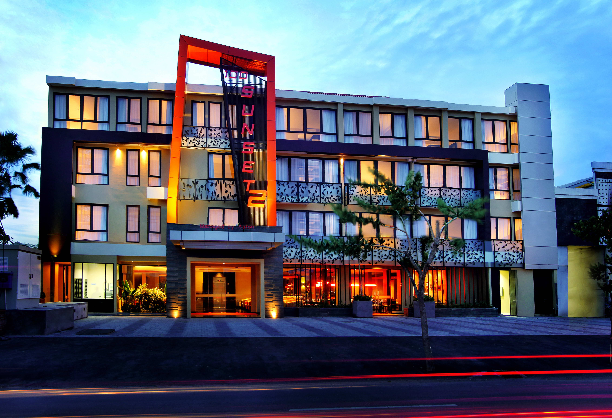

sunset
hotel
From Wikipedia, the free encyclopedia
The Sunset Hotel was a hotel on the west end of Central Avenue in St. Petersburg, Florida.
[1] The hotel was built in 1915 by architect George Feltham, and was popular in the 1920s.
[2]The building is currently operated as the Crystal Bay Hotel, a historic bed & breakfast hotel.

References
1. "Neighbors skeptical of effort to save St. Pete hotel". The St. Petersburg Tribune. February 14, 2014.
Retrieved 8 September 2015.
2. "Former Hotspot Given Second Chance at Life" (PDF). Allison Savage. Retrieved 8 September 2015.